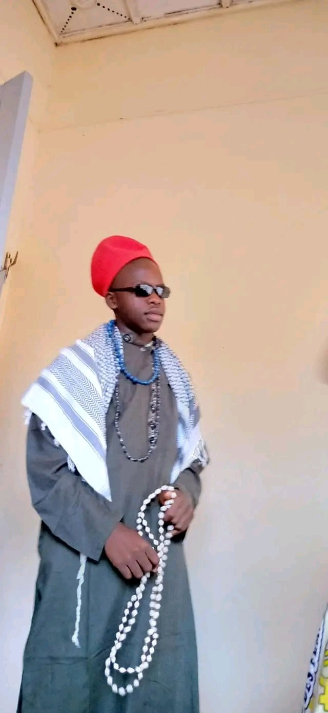

BIENVENUE EN L2 FASI (LMD)
La Promotion
La L2 FASI(LMD) est une Promotion qui existe au sein de l'Université Protestante au congo, elle est entre autre la cinquième génération de la Faculté des Sciences Informatiques et la prémière du système LMD.
Avec le Prof Dr KUTANGILA comme Doyen et Prof Mampuya comme Vice Doyen.
Joseph Loukopunyi en est le Chef de Promotion avec Jamal Ndjoumboket l'adjoint.
Les étudiants de la L2 FASI(LMD) :

BULUPIY GALATI JOEL
Est étudiant congolais en deuxième année licence à l’Université Protestante au Congo(UPC)/Faculté des Sciences Informatiques(FASI). Il est né le 22 février 632 à MAGBENDA au MAGBOSA STATES. Joël est le garçon de la famille de 3 enfants dont 2 filles et lui le seul garçon.
Habitant de Tay , Q.MANANA

AKIM HALAZIRE MUKULUBANJI
Est un étudiant congolais en deuxième année licence du nouveau système LMD à l’Université Protestante au Congo(UPC) dans la Faculté des Sciences Informatiques(FASI). Je suis né le 27 décembre 2001 à Bukavu dans la province du Sud-Kivu. Je suis le premier d’une famille de 3 enfants dont deux filles et cinq garçons.Fils de BAHATI CHALAZIRE et ZAWADI MISENGA, passionné du basketball et du football.

AKOLA MBAMBA CHRISTINE
Est une étudiante congolaise en L2(LMD) faculté des sciences informatiques(FASI) à L'université Protestante au Congo(UPC).Elle est née le 25/07/2000. Christine est née dans une famille de 5 enfants composée d'un seul garçon et quatre filles dont elle est la Benjamine de sa famille.

ALOMA SALEH BENNY
BENNY ALOMA SALEH est une étudiante congolaise en deuxième année licence à l’Université Protestante au Congo(UPC)/Faculté des Sciences Informatiques(FASI).Elle est née le 27 juillet 2003 à Kinshasa aux environ de 23h.Benny est la 3eme d’unefamille de 9 enfants.Diplômée d’état à l’école TURCO-CONGOLAISE MAARIF section scientifique,option mathematiques-physique.Sa couleur préférée est le rouge.Elle est passionné par ses études,l'informatique.Elle a toujours voulu devenir ingénieur en aéronautique précisément mécanicienne.

ATWEKA NGWANZA CHRIST-EN-VIE
Est un etudiant de la L2 FASI LMD UPC

BANGALA MPANYA ANGE
Est un étudiant congolais en deuxième année licence à l’Université Protestante au Congo(UPC)/Faculté des Sciences Informatiques(FASI). Il est né le 11 décembre 2002 à Kinshasa en RDC. Ange est né dans une famille de 6 enfants dont 5 garçon est 1 fille il est troisième enfant de sa famille. Il grandit à Kingabwa dans un quartier pas très connu d’où il passait toute son enfance il aime bien jouer sa passion c’est le football son sport préféré ou il évolua au poste de gardien de but dans son club du quartier Ba Nzoyi (les abeilles).
Fait l’école maternelle à Saint Joseph de Cluny situé sur Kingabwa avenue buffle, ou il étudie la deuxième, et troisième maternelle.
Ainsi entamant la vie primaire à l’école Saint François Collège Kiwanuka. Il étudie la première jusqu’en sixième primaire est eu son diplôme primaire avec un pourcentage de 69 et au TENAFEP 41 était parmi les meilleurs côtes de l’école.

BANZA KALUMBA MERVEIL
Est un étudiant de la L2 FASI LMD UPC

BAYAULI MWASA PASCAL
Est un étudiant de la L2 FASI UPC

BAYONNE KOUKEM EMMANUELLA-THYLANE
Est une étudiante de nationalité congolaise née le 14 novembre d’une certaine année. Bayonne est la seconde dans une famille de trois enfants dont un garçon et deux filles. Ayant obtenu son diplôme en Latin-Philosophie avec une bonne mention, ce qui lui a permis de ne pas faire un test d’admission à l’Université Protestante au Congo/UPC qui est le lieu où elle poursuit ses études aujourd’hui en deuxième année licence dans la FACULTE DES SCIENCES INFORMATIQUES / FASI.

BOKELE WALALA HERVE
Est un étudiant congolais en deuxième année de cycle de licence à l’Université Protestante au Congo (UPC) en sigle, en faculté des sciences informatiques (FASI). Il est né le 24 novembre 2001 à Kinshasa , République démocratique du Congo Herve est deuxième d’une famille de 5 enfants dont 4 garçons et une fille cadette,
Directeur financier l’entreprise à Fondation pour le Développement de Kiri (FODEKI) en sigle.

BOKULU BONIFACE BELVIE
Est un étudiant de la L2 FASI LMD UPC

BONGOLO NADE HEIDI
Est une étudiante congolaise à l’Université Protestante au Congo (UPC) dans la faculté de sciences informatiques (FASI) en L2 LMD.
Elle est née le 06/03/2004. Cinquième de sa famille de 6 enfants dont 5 filles et 1 garçon.

BOY-MUKE EXAUCE
Est un étudiant congolais en deuxième année licence à l’Université Protestante au Congo(UPC)/Faculté des Sciences Informatiques(FASI). Il est né le 20 octobre 1890 à KINSHASA en République Démocratique du Congo . Dernier enfant d’une famille de 14 enfants ; il a poursuivi ses études secondaires au collège Saint Joseph/Elikya.
FINEZA ISSAMBA DÉSIRÉ
Est un étudiant congolais en deuxième année de Licence à l’UNIVERSITE PROTESTANTE AU CONGO (UPC)/Faculté des Sciences Informatiques (FASI). Il est né le 30 novembre 1974 à Kinshasa en RDC. DESIRE est le cinquième d’une famille de 6 enfants, cinq garçons et une fille. Je suis entrepreneur, parolier, producteur de films et PDG de plusieurs entreprises.

FIMPA MALANGU RILORD
Est un étudiant congolais en deuxième année de Licence à l’UNIVERSITE PROTESTANTE AU CONGO (UPC)/Faculté des Sciences Informatiques (FASI). Il est né le 13 Juin 2003 à Kinshasa en RDC. Rilord est le deuxième d’une famille de 3 enfants, dont il est le seul garçon. Fils de Cathy Kabonge et Guylain Fimpa, il a débuté ses études à Cours Sénèque, puis au Collège Révérend Kim, et enfin à l’Institut Monseigneur BOKELEALE.

HADJI AMURI ARISTOTE
Est un étudiant congolais en deuxième année de licence à l’Université Protestante au Congo(UPC) dans la Faculté des sciences informatique (FASI). Il est né à Kinshasa le 03 mars d’une certaine année. Aristote est le fils ainé d’une famille de 3 enfants. Son père s’appelle Serge KABALANGA et sa mère Sylvie SAIDIYA. Aristote aime beaucoup manger le fufu, son sport préféré est le football, son club préféré est le FC Barcelone, son joueur préféré est Lionel Andres MESSI et sa ville préférée est Miami Beach situé aux États-Unis d’Amérique.

IBUYE BALEGARIME JUNIOR
Est un étudiant congolais en deuxième année licence à l’Université Protestante au Congo(UPC)/Faculté des Sciences Informatiques(FASI).
Né à Kinshasa le 30/03 d’une certaine année. Cadet d’une famille de 4 enfants dont 3 garçons et une fille.
Junior Ibuye a fini ses études humanitaires au Collège Saint Joseph/ Elikya dans l’option Mathématique-Physique avec distinction.

IKUKU ONDA BENJAMIN
Est un homme très calme, intelligent, narcissique, croyant(Christ)…, il est le cadet d’une famille des 5 enfants dont 2 filles et 3 garçons, né le 11 /Septembre/ 2003 en RDC dans la ville province de Kinshasa.
Issu d’un père Sakata nommé IKUKU M’FIRI NKEWA Adrien et d’une mère Sakata aussi nommée MBUYULU MONGBAKE Françoise, Benjamin est connu par d’autres sur les réseaux sociaux sous le pseudo de Ben IKUKU.
Actuellement, c’est un étudiant de L’Université Protestante au Congo en deuxième année de licence (LMD) dans la faculté des sciences informatiques.

IMBA SAM SAM
Né le 07/Mars/1945 à Kinshasa, est cadet dans une famille de 7 enfants dont 5 garçons et 2 filles. Ce jeune homme est passionné de la musique chrétienne, de la cuisine, des sujets d’explorations scientifiques dans plusieurs domaines de la vie courante notamment : le domaine informatique avec des sujets en rapport avec l’Intelligence Artificielle et le Software Engineering ainsi le domaine de la musique chrétienne plus particulièrement. Toujours apprendre et dans la simplicité, c’est sa devise.

ISIA AMUNDALA EMMANUEL
Est un étudiant de la L2 FASI LMD

ISSA KITIMA BIN-RAMAZANI
Est un étudiant congolais en deuxième année licence à l’Université Protestante au Congo (UPC)/Faculté des Sciences Informatiques (FASI). C’est passionner d’informatique, plus dans le domaine touchant le réseau et la maintenance des différentes outils et logiciels informatique., il décide d’en faire l’objet de ses études pour devenir informaticien.
ISSA reste aussi très intéresser par la musique et le monde musical. Auteur de quelques compositions propre à lui, il a su se faire un nom dans le monde la musique mais aussi grâce à une activité sur le réseau.
« L’Objectif est de réussit en faisant ce qu’on aime et ce en quoi nous sommes douées »

KALALA CIALA JONATHAN
Est un étudiant congolais en deuxième année licence à L'université Protestante au Congo (upc) en faculté de sciences informatiques(FASI).
Il est né le 26/09/2000 à Kinshasa. Jonathan est né dans une famille de 5 personnes 3 garçons et 2filles il est troisième dans famille.

KALALA SEFU BIENFAIT
Est un étudiant congolais en deuxième année de licence à l’Université Protestante au Congo(UPC)/Faculté des Sciences Informatiques(FASI). Il est né le 15 juin 2003 à Kinshasa ville province de la RDCongo dans une famille chrétienne de 5 enfants dont-il occupe la troisième place entre deux filles et deux garçons.
Passionné du sport et de la musique, il intégra la chorale de l’église Évangélique “Jésus la Gloire” où il sert Dieu en jouant au piano. Actuellement, l’étudiant KALALA est à la quête du duplôme de licence en science informatique de l’université protestante au congo

KALOMBO KAZADI NOBLESSE
Est un étudiant de l’UPC né le 12 mars 2004 au Cotonou. Il a grandi à Lagos, au Nigeria.
Né le 12 mars 2004 au Cotonou, Kalombo Kazadi Noblesse passe son enfance dans quartier populaire de Cotonou. Son père, kalombo Emmanuel et sa mère jolie Muadi sont des Congolais.
En 2006, âgé de 2 ans, il quitte le Cotonou pour le Nigeria ; Il s’inscrit dans une école qui se trouve à Lagos appelé Caleb international School en 2008. Il gagne en concours de français et d’autre diverse activité jusqu’à ce qu’il termine ses études primaire. En 2014 il prend l’avion avec sa famille pour venir vivre aux Congo avec sa grand-mère ou il consacre une année à apprendre la langue française
En 2015, KALOMBO KAZADI fait sa toute première inscription dans un pays étranger a L’E.I.B le Cartesien qui est une école bilingue
En 2018, il quitte le Cartesien pour aller s’inscrire au lycée madame de sévigné.
En 2021, il raccroche son diplôme d’état avec 62% en faisant la section math-physique
En conclusion, la vie de KALOMBO KAZADI NOBLESSE a été marquée par des réalisations remarquables et des défis surmontés ; son parcours, de ses humbles débuts à son ascension vers la renommée, est une source d’inspiration pour beaucoup

KALONJI KABEYA JOEL
Est un étudiant congolais en deuxième année de licence à l’Université Protestante au Congo(UPC) dans la Faculté des sciences informatique (FASI).

ALAIN KALUME NTUMBA
Est un étudiant congolais en deuxième année de licence à l’Université Protestante au Congo(UPC) dans la Faculté des sciences informatique (FASI). Il est né à Kinshasa le 21 mai d’une certaine année. Alain vient d’une famille de 14 enfants dont 8 garçons et 6 filles, son père est un militaire et sa mère une commerçante. Il a fait ses études primaires au collège Don Bosco et ses études humanitaires à l’institut de la Gombe option électricité industriel où il a obtenu son diplôme d’état.

EXAUCÉE KANA MAKIESE
Est une étudiante congolaise en deuxième année licence du nouveau système LMD à l’Université Protestante au Congo(UPC)/Faculté des Sciences Informatiques(FASI). Elle est née le 01 Mai 200… à Kinshasa dans la République Démocratique du Congo. Exaucée est la deuxième d’une famille de 9 enfants dont 3 filles et 6 garçons….

Kiese mfutila generose
Est une étudiante en L2 (lmd) en faculté de sciences informatiques à L'université Protestante au congo.
Elle est née le 15/05/2004 à Kinshasa. Generose est la quatrième dans la famille de 5enfants dont 3 garçons et 2 filles.

CHELLA KIMFUTA NANIKAFUAKO
Est une étudiante congolaise en deuxième année licence à l’Université Protestante au Congo(UPC)/Faculté des Sciences Informatiques(FASI). Elle est né le 25 juillet 2003 à Kinshasa en RÉPUBLIQUE DÉMOCRATIQUE DU CONGO. Chella est la troisième d’une famille de 5 enfants dont 5 filles. Née du père SIMON KIMFUTA LWANGU et de la mère ELIE KIMESA NGOMBIE, Chella commence son parcours scolaire à la maternelle de l’école C.S MERIBA située à la cité maman Mobutu dans la commune de Mont-Ngafula et c’est dans cette même école qu'elle obtenu son ENAFEP.
Après cella, elle décida de quitter le C.S MERIBA et s'inscrire au LYCÉE MOTEMA MPIKO et c’est dans ce même lycée qu'elle obtenue son diplôme d’État en Pédagogie générale.

KOYO NSUNGU CHRISTIAN
Est un étudiant congolais en deuxième année licence à l’Université Protestante au Congo(UPC)/Faculté des Sciences Informatiques(FASI).
Il est né le 12 Novembre 1220 à hawaii au état Unis.

LAPUTU ZUP-MUMPEYA TRIAL RESIST
Licence à l’Université Protestante au Congo(UPC) dans la Faculté des Sciences Informatiques(FASI).
Fils d’un officier supérieur de Force armée de la République démocratique du Congo et d’une femme d’affaires congolaise.Il est le quatrième enfant d’une famille de 8 enfants dont 5 filles et 3 garçons, il est élevé durant plusieurs années en République démocratique du Congo avant d’aller poursuivre ses études secondaires à Luanda, capitale de l’Angola, en Afrique australe.
Naissance et Origines
Laputu Zup-Mumpeya Trial resist naît le 05 janvier d’une certaine année à 13h43’ à la maternité de Binza Delvaux (Maternité des Sœurs) à Kinshasa.

LOUKOUNYI MBOUYAMBA JOSEPH
Est un jeune étudiant congolais de l’Université Protestante au Congo dans la Faculté des Sciences Informatiques, né le 22 février à Brazzaville. Diplômé d’état au Collège Notre Dame du Congo section Scientifique, option biologie-chimie. Passionné de football, technologie et surtout jeu vidéo.

LUBANZADIO MILANDU Emmanuel
Né le 10 Mai 2006 à Kinshasa, en RDC, est un étudiant en sciences informatiques à l'Université Protestante Au Congo.
Il est 2iem des deux enfants de LUBANZADIO Benjamin et MAKINUTEWA Hadassa dont la sœur est Rejoy. Sa famille est d'origine Congolaise.
Il commence ses études maternelles à KAMA, primaires à l'école Chrétienne La Source De Vie, puis secondaires à l'institut mgr Bokeleale où obtient son diplôme.

Est un étudiant de la L2 FASI UPC

LUMBU WAZENGA BENI
Lumbu Wazenga Beni est un étudiant congolais en deuxième année licence à l’Université Protestante au Congo (UPC)/Faculté des Sciences Informatiques (FASI). Il est né le 10 février 0000 à Kinshasa en RDC. Beni est le cadet d’une famille de 3 enfants dont 1 fille et 2 garçons.

LUNDULA ONEMA MASSIMO
Est un étudiant congolais en deuxième année de licence à l’Université Protestante au Congo(UPC) dans la Faculté des sciences informatique (FASI). Il est né à Kinshasa le 03 octobre d’une certaine année. Massimo est le cadet d’une famille de 4 enfants dont il est le seul garçon, son père s’appelle Marcel ONEMA et sa mère Louise NDAYA. Il a fait ses études primaires au complexe scolaire éveil et ses études humanitaires au collège saint Théophile de lemba où il a obtenu son diplôme d’état.

MABEKA MASIMANGO RHEMA
Est un étudiant congolais en deuxième année licence à l’Université Protestante au Congo (UPC)/Faculté des Sciences Informatiques (FASI). Il est né le 24 mars à Kwilu-Ngongo au Kongo Central. Rhema est l’ainée d’une famille de 3 enfants dont 2 filles et lui le seul garçon…. Depuis petit, fasciner par les ordinateurs, il décide dans faire l’objet de ses études pour devenir informaticien, précisément dans les domaines touchant les bases de données.
Rhema reste aussi très intéresser par la musique et le management. Il a déjà eu à travailler dans un label et une maison de production, ce fut sa première expérience dans le monde du travail. Suivant beaucoup de formation a gauche a droite, car très inspirer, intelligent et ambitieux, il compte accomplir et réaliser ses objectifs de vie.

MAKASHI MBUYI NATHAN
Est un étudiant de la L2 FASI UPC

MALU HERITIER
Est né le 25 Avril 1960 à Los Santos
étudiant à l 'Université Protestante au Congo (UPC) en deuxième licence
dans la faculté de sciences informatiques(FASI) ..

MALU SEPHORA
Née le 20 Novembre 1800 à kinshasa dans une famille composée de 5 enfants dont 3 filles et 2 garçons. Elle commencera ses études maternelles à l’E.P LISANGA où elle sera remarquée par ses enseignants par son intelligence et sa discipline ; cela va lui valoir le prix de la meilleure élève de sa promotion. Elle va continuer ses études primaires dans la même école où elle va obtenir son certificat de fin d’études primaires avec 87% qui lui permettra de commencer ses études secondaires au Lycée Monseigneur Shaumba où elle sera deuxième lauréate de sa promotion aux examens d’Etat avec 79%.
Passionnée par la médecine, elle ira s’inscrire à l’Université Protestance au Congo en sigle U.P.C en médecine, ce qui implique un test de recrutement vu l’organisation interne de ladite université. Une semaine avant la date prevue du test elle tombe malade ,le premier jour du test hospitalisée elle va devoir s’efforcer pour arriver sur le lieu du test et le faire avec plusieurs difficultées ne pouvant pas se concentrer sur ledit test , le deuxième jour impossible pour elle de s’y rendre pour passer son test à cause de son état de santé. Après quelques jours les résultats ont été affichés et son nom n’y figurait pas parmi les personnes retenues.
Abattue, elle va devoir continuer avec une autre faculté et son choix s’est porté sur l’informatique. Elle s’est rendue au bureau d’inscription et a fait son deuxième choix cette fois-ci qui n’exigeait pas de test vu son résultat aux examens d’Etat.
Au début un peu démoralisée suite à son échec mais au fil du temps elle va découvrir le goût de l’informatique et elle s’y est totalement lancée pour ne pas dire qu’elle a tout oublié de la médecine qui était sa passion mais l’informatique a prit une place très importante qu’elle n’était auparavant.
Aujourd’hui elle travaille sur des projets ou idées informatiques qui avec le temps pourrait se concrétiser et aider la médecine ainsi que d’autres domaines à connaître une suite de développement grâce encore à l’informatique.

META MUSNGA SARAH
Née à Kinshasa, le 05 août d'une certaine année, META MUSENGA Sarah est une étudiante Congolaise à l'Université Protestante au Congo (UPC) dans la Faculté de Sciences Informatiques(FASI) L2 LMD.
Sortie d'une famille de Cinq(5) enfants dont trois garçons et deux filles.
J'occupe la deuxième place et je suis fille ainée !

MILAMBU KABWE ISRAEL
Est un étudiant congolais en deuxième année licence à l’Université Protestante au Congo(UPC)/Faculté des Sciences Informatiques(FASI). Il est né le 18 juin d'une certaine année dans la ville province de Kinshasa en RÉPUBLIQUE DÉMOCRATIQUE DU CONGO. Israël est troisième enfant d’une famille de 5 enfants dont trois garçons et deux filles

MIYISA KASINO MELIANE
Est une étudiante congolaise en deuxième année licence à l’Université Protestante au Congo(UPC)/Faculté des Sciences Informatiques(FASI). Elle est née le 03 janvier à Kinshasa . Meliane est la deuxième d’une famille de 6 enfants dont cinq garçons et deux filles.

MUKOKO MAMBU CHRISTENVIE
Est un étudiant congolais en deuxième année licence à l’Université Protestante au Congo (UPC)Faculté des Sciences Informatique (FASI). IL est né le 25janvier 2003 à Kinshasa en RDC fils de Monsieur Mukoko Wanuanunu Maurice et Madame Nzuzi Lembe Thèrese.
MUKOKO est le cadet d’une famille de 9 enfants dont 4 garçons et 5 filles.
MUKOKO a fait ses études maternelles ainsi que primaires au complexe scolaire DIABENA, ses études secondaires et humanités dans l’écoles : complexe scolaire Diabena et collèges Frère Alingba.
Il a eu son diplôme d’état en 2021 avec une note de 59% en latin philo.

MULEKA BAMONA JAEL/h2>
Est une tudiante congolaise en deuxième année licence à l’Université Protestante au Congo(UPC)/Faculté des Sciences Informatiques(FASI). Née le 06 Mai 1220 à Kinshasa en RDC . Jaël est née dans une famille de 4 enfants dont deux filles et deux garçons et en est la deuxième.

SABRINA MUNYAPARA KANZEWU
Est une étudiante congolaise en deuxième année licence à l’Université Protestante au Congo (UPC)/Faculté des Sciences Informatiques (FASI). Elle est née le 22 juillet 2004 à Kinshasa aux environ de 07. Sabrina est la 3eme d’une famille de 7 filles. Diplômée d’état à l’école Ku Ntwala section scientifique, option mathématiques-physique avec 71% de moyenne. Sa couleur préférée est le rose. Son animal préféré est le lion. Elle est passionnée par les études qu’elle est entrain de faire , L’Informatique. Elle aspire être consultante en sécurité informatique.

MUTABUNGA SIFA Magloire
Est
née le 12 décembre 2002 à Kinshasa /RDC.
Elle a effectué ses études primaires et secondaires à l’institut BOBOKOLI section scientifique option Biologie- chimie,
Elle poursuit notamment son cursus universitaire à l’Université Protestante au Congo(UPC)/Faculté des Sciences Informatiques(FASI), en deuxième année licence (LMD). Magloire est la 6 éme d’une famille de 10 enfants dont 7 filles et 3 garçon.

MUTEBA MUTEBA JUNIOR
Né le 11 Novembre 2002 à Kinshasa, en RDC, est un étudiant congolais en deuxième année licence en sciences informatiques à l'Université Protestante au Congo.
Il est 6ième des sept enfants de Mukuna Muluepabi Jeanine licenciée en communication et de MUTEBA NKOLAMUAMBA GUSTAVE expert en fiscalité, tous deux originaire du Kananga au Kasaï.
Il a quatre frères : Hervé, Yannick, Andy, Maestro et deux sœurs : Sandra et Monica.
Il reçoit une éducation baignée dans la religion catholique et passe toute son enfance à Kinshasa.
Il commence ses études maternelles à Monica, primaires à l'école Aurore, puis secondaires au collège des jésuites Saint Etienne où il obtient son diplôme.

MVUAMBA LUYEYE PROSPER-ISRAEL
Est une étudiant de la L2 FASI LMD UPC

Exauce Emmanuel mvuezana
Est un étudiant congolais en deuxième année licence à l’Université Protestante au Congo(UPC)/Faculté des Sciences Informatiques(FASI). je suis né le 9 août 2002 à Kinshasa . je suis le 7 ème d’une famille de 9 enfants dont 6 filles et 3 garçon.
je suis développeur , j'ai 20 ans.
Ma passion pour la conception des sites web commence alors que j'étais encore élève a ITI Bonsomi, alors que je mettais mes pieds pour la première fois à l'Université (upc) que tout a changé.
je décide de devenir développeur web indépendant après avoir bosser plusieurs site .
Mon expérience acquise au fil des projets me permet de mieux comprendre les attentes d'un client et de répondre précisement au besoin demandé en fonction du domaine d'activité.

NAHESI MONI GUELS
Née en république démocratique du congo dans la ville de Kinshasa le 07 mai 200 , Et de parent congolaise tous deux vivants. Mademoiselle NAHESI MONI GUELS est fille de son père NAHESI KIFUNGA JEAN et de sa mère MAKASI CHRISTINE , femme dévouée à l'éducation de ses enfants . Dès l'obtention de son diplôme d'état en 2021 ,
mademoiselle NAHESI MONI GUELS va obtenir l'inscription à l'université protestante au congo ( u.p.c ) où elle poursuit ses études d'informatique

NDEKE MAYELE JAMIS CALEB
Est un étudiant congolais évoluant en deuxième année de licence dans la faculté des sciences informatique à l’Université Protestante au Congo (UPC).
Il est né le 26 Aout 200** à Kinshasa, il est 5eme d’une famille de 7 enfants dont le père est Congolais et la mère Belge.
Caleb est passionné par le football, la politique, l’informatique et également par les écritures, il est auteur de différents texte que vous pourrez découvrir en le contactant par son adre

KESSIA NDINDO NGALULA
Est une étudiante congolaise en deuxième licence à l’Université Protestante du Congo dans la faculté des sciences informatique , née le 16 /05/2003 à Kinshasa dans une famille de 7 enfants dont elle est l’avant dernière avec 5 filles et 2 garçons , elle est courageuse ,gentille ,sociable et surtout aimée de ses parents. Un enfant modèle ,travailleuse ,bosseuse toujours présente pour ses amies ,pour ses collègues et surtout pour sa famille .
Elle a étudié au lycée bosangani depuis sa tendre enfance jusqu’à obtenir son diplôme, elle a développé pendant ce temps où elle était dans ces quatre murs une passion pour la technologie et a voulu l’exercer dans les locaux de l’UPC pour pouvoir avoir une bonne formation et être meilleure dans tout ce qu’elle entreprend .
Dans ce lycée ,elle a développé l’art oratoire qu’elle exercera à l’avenir car malgré que l’informatique soit sa passion la littérature et tout ce qui englobe cette discipline a toujours sa première passion

NDOTA LWADI GLADYS
Née en république démocratique du congo dans la ville de lubumbashi le 31 janvier 2004 , Et de parent congolais tous deux vivants. Mademoiselle NDOTA LWADI GLADYS est fille de son père LWADI JEEAN-JACQUES et de sa mère KHANGE BIBIANE , femme dévouée à l’éducation de ses filles . Dès l’obtention de son diplôme d’état en 2021 avec 60% ,
Mademoiselle NDOTA LWADI va obtenir l’inscription à l’université protestante au congo ( u.p.c ) où elle poursuit ses études d’informatique pour accomplir son rêve d’ingénieur informaticienne .

NGALA MULUME ISRAEL
Est un étudiant de Deuxième Licence de l’Université Protestante au Congo, UPC en sigle à la faculté de sciences informatique(FASI). C/Ngaliema || Né à Lubumbashi le 25 Mai 1997
|| Q/ Joli Parc Nationalité Congolaise 22, Av. Kilimani /Kinshasa || Célibataire || Téléphone : +243 828 996 839
|| E-mail : ngalamulumeisrael03@gmail.com || Twitter : IsraelNgala

NTUMBA NGEDA-MUADI DENEDICTE
Est une étudiante congolaise en L2(LMD)en Sciences Informatiques à L'université Protestante au Congo(UPC). Elle est née le 15/03/2000 à Kinshasa.
BENEDICTE est l'ainé d'une famille de 5enfants dont 3garçons et 2filles. BENEDICTE est passionnée par la danse.

NTUMBA TSHIBAMBE ELISE
Est une étudiante congolaise en deuxième année licence à l’Université Protestante au Congo(UPC)/Faculté des Sciences Informatiques(FASI). Elle est né le o3 septembre à Kinshasa RDC . Elise est deuxième d’une famille de 10 enfants dont 5 filles et 5 garçons. En 2012 elle fut détenteur d’un diplôme d’état en latin philo qui l’a permis à poursuivre les études universitaire en informatique, Fasciné à l’idée de pouvoir travailler en tant que informaticien dans une grande entreprise qui lui apportera 500 000 millions de dollars par mois et faire le tour du monde entier, pour cela elle continua à travailler dur sur ses projets. En 2022 elle détient un brevet en makeup qui a fait d’elle une maquilleuse professionnelle, qui est la plus sollicité à cause de son dévouement.

SALAKIAKU MVINDU FRANCE
Née le 20 Mars 200* à Kinshasa en République Démocratique du Congo, est une étudiante congolais en deuxième année licence à l’Université Protestante au Congo(UPC)/Faculté des Sciences Informatiques(FASI). 2ème enfants d’une grande famille, elle fait ses études secondaires au Complexe Scolaire Cardinal Malula où elle obtient son baccalauréat en 2019. Elle poursuit ensuite ses études universitaire à l’Université Protestante au Congo(UPC) en faculté de Sciences informatique(FASI)…

SENGA MUNDUKISA JEAN-JOEL
Est un étudiant belgo-congolais en deuxième année licence à l’Université Protestante au Congo(UPC) , Faculté des Sciences Informatiques(FASI). né le 2/03/2002 à Bruxelles en Belgique , deuxième d’une future famille de 4 enfants .en 2008 , retourna à Kinshasa après une mutation de son père pour raison d’étude et de travail faisant son école primaire au collège Bilombe, puis commençant et finissant ses humanité au CS Cardinal Malula en option Bio-Chimie.En 2020, s’inscriva à l’UPC. Ayant comme passion la lecture,le sport, la poésie et cuisine.

SIBABANZA NDOMBOLO JEREMIE-TALL
Est un étudiant congolais en deuxième année licence du système Licence-Master-Doctorat (LMD) en sigle à l’Université Protestante au Congo (UPC) en Faculté des Sciences Informatiques (FASI). Il est né le 28 mai 1900 à Cologne en Allemagne. Jérémie-Tall est l’ainé d‘une famille chrétienne de 6 enfants dont 3 garçons et 3 filles. Il est passionné des sports de combat, Jérémie-Tall est maitre ceinture noire 1ere Dan au Karaté-Shotokan, et entrepreneur.

TABU KALUME ALBERTO
Est un étudiant de la L2 FASI LMD

TSHILOMBA MUSANGU ROSIE
Est une étudiante congolaise en deuxième année licence professionnelle à l’université protestante au Congo (UPC) Faculté des Sciences informatiques (FASI).
Né le 16/10/ 2004 à OTTAWA au CANADA. Elle est la troisième d’une famille de 7 dont 5 filles et 2 garçons.
Mon père s’appelle MUSANGU Erick et ma mère s’appelle KANIEMBA JULIE.
J’ai commencé mes études à l’âge de 3 ans à l’école Nationale d’administration publique (ENAP) au Canada, primaire dans la même école, J’ai eu mon Bac avec 63%.
Ma couleur préférée est le ROSE parce que c’est mon nom, et mon plat préféré est l’haricot.
J’adore les bébés et c’est mon premier rêve. Suis une servant de DIEU et j’aime servi mon DIEU avec tout ce que je possède….

VINGU PUNGI Daniel
Est un étudiant congolais en deuxième année de licence à l'Université Protestante au Congo UPC en sigle,dans la faculté des sciences informatiques FASI ensigle, né d’une famille nombreuse le 15 juin 2003,dans la ville province de Kinshasa.
VUNUNU MAKUENDE SAGESSE
Est un étudiant de la L2 FASI LMD UPC

Jean Gloire Wazenga GONDWE
Jean Gloire Wazenga GONDWE est un étudiant congolais en deuxième année licence à l’Université Protestante au Congo (UPC)/Faculté des Sciences Informatiques (FASI). Il est né le 10 AOUT 2000 à Kinshasa en RDC. Jean Gloire est le deuxième d’une famille de 3 enfants dont 1 fille et 2 garçons.
A fait ses études primaires à l’ecsv (Ecole Chrétienne la Source de Vie) /Gombe, ses études secondaires à Institut Gianelli /Mont Ngafula, a eu son diplôme en 2020.
Il a commencé ses études supérieures à l’ISPT (Institut Supérieur pédagogique et technique), puis continué à l’Upc.
en bref, c’est un mec bien.

WITANENE MBILIZI Stanis
Né le 11 juin 2000 à KAMITUGA dans la province du Sud-Kivu ; Fils de MBILIZI Firmin et BAHATI Rosine, Je suis l’ainé d’une grande famille composée de 4 garçons et deux filles.
Je suis étudiant en deuxième année de licence du nouveau système LMD à l’Université Protestante au Congo(UPC) dans la Faculté des Sciences Informatiques(FASI).

YELA BANZA JACQUES
Est un étudiant de la L2 FASI LMD UPC

GLORIA ZAMWIDUKO PATAULE
Est une étudiante congolaise en deuxième année licence à l’Université Protestante au Congo(UPC) dans la faculté de sciences informatiques(FASI), née le 08 juin 2002 à Kinshasa ,ainée d’une fratrie de trois filles. Diplômée en chimie-biologie à l’institut bobokoli/Binza-delvaux
AMANI TANKWE AMANI
Est née un certain vendredi 08/11/2004 à Kinshasa, elle est en L2 (LMD) Sciences informatiques. Étudiante à L'université Protestant au Congo(UPC).Elle est née dans une famille de 4 personnes 2 filles et deux garçons, elle est la deuxième dans sa famille.
Catalogue avec tous les cours de la L2 FASI(LMD)
La deuxieme licence LMD fasi compte 17 cours dont :
| COURS | PROF | Credits |
|---|---|---|
| Gestion de projet | Mike NKONGOLO | 3 |
| Methode analyse numerique | Jean-marie KAPENGA | 3 |
| Agorithme | Landry MATE | 4 |
| Merise | Pescie MAMPUYA | 4 |
| Programmation web php | John MALALA | 4 |
| Reseaux informatique | Vogel KIKETA | 4 |
| Base de donnees | Kuyunsa Alai | 3 |
| Système d'exploitation | CT KALOMBO | 4 |
| Technique de maintenance | Edi BANUNGA | 3 |
| Statistique | Karim OMONGA | 3 |
| Droit Informatique | Kodjo NDUKUMA | 2 |
| Comptabilite de societe | Nelson IFEKA | 2 |
| Langage de programmation objet(java) | David KUTANGULA | 4 |
| Geometrie pour ingenieurr | Gerard TAWABA | 3 |
| Circuit logique | Trésor MAFUKU | 5 |
| Initiation à la recherche scientifique | MUENI Honoré | 2 |
| Programmation Système embarqué | David KUTANGULA | 4 |
A PROPOS DE NOUS
Nous sommes un groupe d'etudiant de l'université protestant au congo (UPC) en sciences informatiques,deuxieme annee de licence (LMD)Dans notre projet nous avons eu a parler de notre promotion qui est la L2 sciences informatiques LMD.
Voici donc l'Equipe de Projet
SIBABANZA NDOMBOLO Jeremie-tall
+243 000-000-000
upcl2lmd@gmail.com

BULUPIY GALATI Joel
+243 000-000-000
upcl2lmd@gmail.com
BAYONNE KOUKEM EMMANUELLA-THYLANE
+243 000-000-000
upcl2lmd@gmail.com
FINEZZA ISSAMBA DESIRE
+243 000-000-000
upcl2lmd@gmail.com
MULEKA BAMONA JAEL
+243 000-000-000
upcl2lmd@gmail.com

VUNUNU MAKUENDE SAGESSE
+243 000-000-000
upcl2lmd@gmail.com
MUTABUNGA SIFA MAGLOIRE
+243 000-000-000
upcl2lmd@gmail.com
IMBA SAM SAM
+243 000-000-000
upcl2lmd@gmail.com
MABEKA MASIMANGO RHEMA
+243 000-000-000
upcl2lmd@gmail.com
ISSA KITIMA BIN-RAMAZANI
+243 000-000-000
upcl2lmd@gmail.com